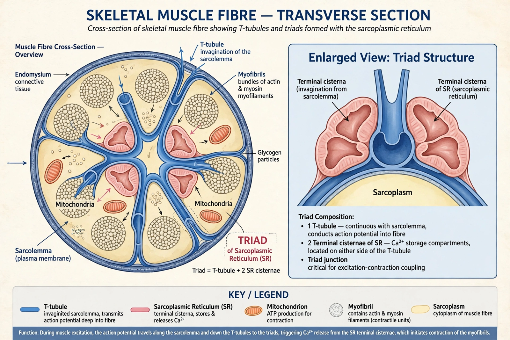

T-tubule
| T-tubule | |
|---|---|
 | |
| Full name | Transverse tubule |
| Location | Skeletal and cardiac muscle fibres |
| Function | Rapid conduction of action potentials into the cell interior; excitation–contraction coupling |
| Key proteins | Dihydropyridine receptor (DHPR, Cav1.1/1.2); BIN1; junctophilin |
T-tubules (transverse tubules) are extensions of the cell membrane (sarcolemma) that penetrate into the centre of skeletal and cardiac muscle cells. Conducting electrical impulses from the cell surface deep into the fibre, T-tubules ensure that contraction is activated rapidly and uniformly throughout the cell, even in very thick fibres. They are a key component of excitation–contraction coupling.
Structure
In mammalian skeletal muscle, T-tubules encircle each myofibril at the level of the A–I band junctions, so each sarcomere is crossed by two tubules. In cardiac muscle there is one T-tubule per sarcomere, at the Z-disc, and the tubules are wider and more irregular, especially in ventricular myocytes. The tubule lumen is continuous with the extracellular fluid.
Where a T-tubule passes between two terminal cisternae of the sarcoplasmic reticulum, the three structures form a triad in skeletal muscle (a "dyad", with one cisterna, in cardiac muscle). The T-tubule membrane is rich in L-type calcium channels — the dihydropyridine receptors — which face ryanodine receptors on the sarcoplasmic reticulum across a narrow junctional gap.
Function in excitation–contraction coupling
When an action potential — initiated at the neuromuscular junction by acetylcholine — sweeps over the sarcolemma, it propagates down the T-tubules. In skeletal muscle, depolarisation changes the conformation of the dihydropyridine receptor, which mechanically opens the ryanodine receptor (RyR1), releasing Ca²⁺ from the sarcoplasmic reticulum into the cytosol. The calcium binds troponin, moves tropomyosin off the actin binding sites, and triggers cross-bridge cycling and contraction. In cardiac muscle, the DHPR instead admits a small influx of Ca²⁺ that triggers a much larger release from the reticulum ("calcium-induced calcium release" via RyR2).
Clinical relevance
T-tubule organisation is disrupted ("de-tubulation" and loss of synchrony) in heart failure, contributing to weak and dyssynchronous contraction. Mutations in proteins that shape T-tubules, such as BIN1 (amphiphysin 2), cause centronuclear myopathies. Exercise and development remodel the T-tubule network; newborn cardiomyocytes initially lack T-tubules and acquire them postnatally.